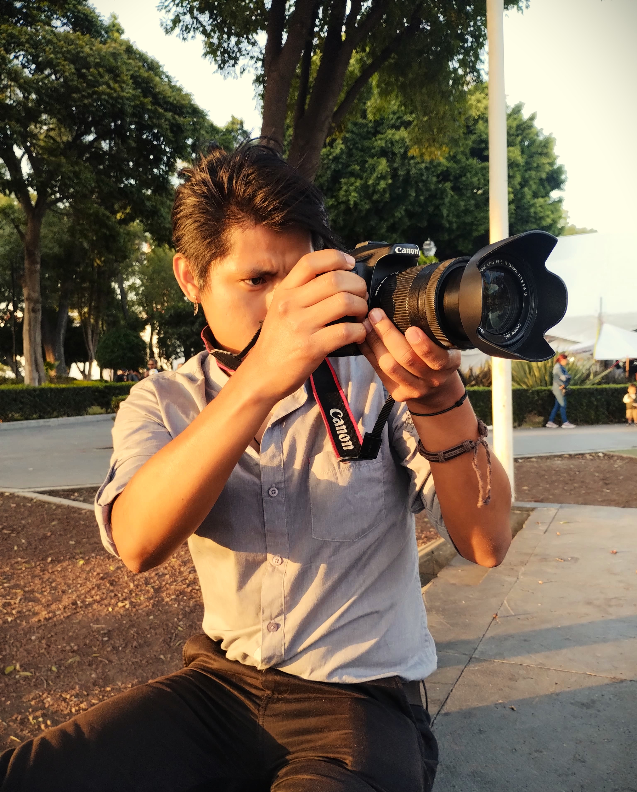

Hi! It's Néstor. Welcome to my little spot on the internet. At the moment, I work as a private math and physics teacher for high schoolers. But in the long term, I want to work as a data scientist or web developer. This project is a product of that effort.
I'm enthusist about physics, maths, web development and programming.

Reading.
I'm actually rediscovering my love for books, especially reading out
loud.
When I was a child, I remember myself spending a lot of time reading
books. However, when I acquired a smartphone, that reading habit
disappeared. It's such a shame because of all the knowledge I couldn't
get since then.
Nevertheless, as an act of self-care, I'm trying to get that habit
back, which wasn't as hard as I thought this time. I don't know what
was different this time, but it does feel different. I'm loving the
feeling of the paper sliding through my fingers, the smell of books,
and the sense of being so focused that I almost forget where I am.
Because of that, and more, I'm really excited about all the stuff I am
going to discover.
Listening interesting stuff.
I do not pretend to be an expert. I just like listening to albums and
podcast while I do some housework —washing the dishes and clothes,
those things— or on my way to work. Oh! And I really do like video
essays. What an amazing way to share knowledge. I love them.
Learning English.
It's kind of funny how all the stuff I'm currently doing —or at least
doing more conciously— comes from wanting to talk with my niece in
English.
It is really hard, but I'm doing my best. And it actually feels good
to make an effort again. I hope I can watch a movie by the end of the
year without subtitles. Wish me luck!